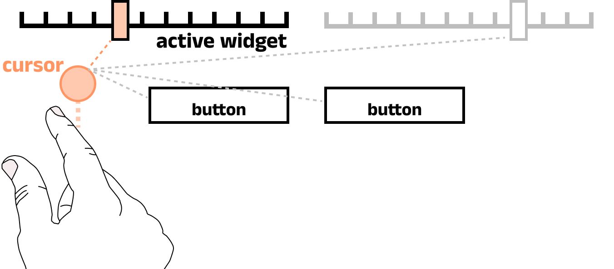
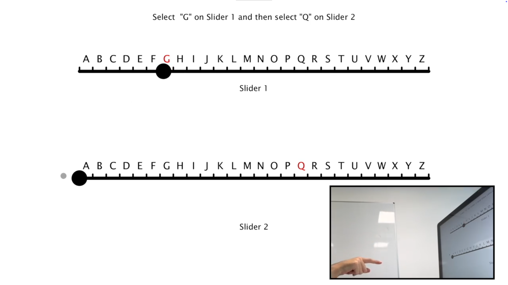
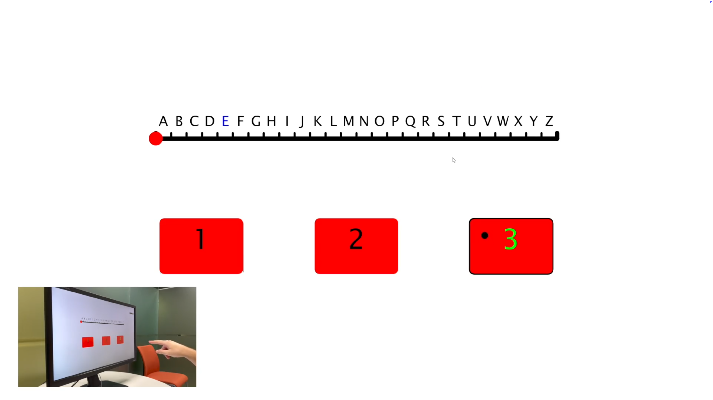

Spatial Area Cursors - Introducing the Proxemic Cursor
A user-centred research project to make spatial touchless interactions faster, easier, and more comfortable.

Overview: The Problem & Solution
Touchless and spatial gesture interfaces, although gaining popularity, can be clumsy and fatiguing for users. Continuous actions, such as moving a slider, are especially challenging, requiring precise hand movements that can lead to errors and arm strain.
The Problem: How can we make spatial input, especially for continuous interactions (such as sliders), more accurate, faster and less fatiguing?
The Solution: I designed and evaluated a new interaction technique called the Proxemic Cursor, A type of area cursor. This system removes the need for precise targeting, instead allowing a user to loosely point towards a widget. The system intelligently targets whichever widget is closest to the cursor. The proxemic removes overbearing UI changes associated with typical area cursors, instead focusing on maintaining the precise targeting affordance of a cursor but allowing for more forgiving targeting.

My Role:
As the lead researcher and designer for this project, I was responsible for:
- Interaction Design: Proposing and defining the "proxemic cursor" concept and its interaction logic.
- Software Prototyping: Building the test software used in the studies.
- User Research: Designing and executing two formal user studies.
- Data Analysis: Statistically analysing all quantitative data and coding qualitative feedback.
- Publication: Writing and publishing the findings at an international conference.
The Process: A User-Centred Evaluation
Working with Users & User Studies
To validate the design, I conducted two formal, within-subjects user studies with 41 participants.
- Study 1 (Sliders): 21 users were asked to perform selection tasks using adjacent sliders. This was tested across different layouts that required movements from left to right and from up to down. This provided an understanding of how users traversed for continuous movements and how accurately they can control a movable widget.

- Study 2 (Mixed Widgets): Next, 20 users were tested on a more complex interface that included both a slider and buttons, in order to replicate a more realistic interaction scenario. This provided a deeper understanding of how users navigate spatial interfaces, particularly between different types of controls

Across both experiments, to measure usability, I collected a mix of quantitative and qualitative data:
- Quantitative Metrics: In order to fully understand the interaction flow, I mapped out a typical user interaction (for a slider). This created a basis for evaluating performance based on quantitative metrics: Task completion time, time to acquire a target, and selection accuracy.

- Qualitative Metrics: Subjective workload was measured using the NASA-TLX survey. I also conducted semi-structured interviews to gather user preferences and opinions.
Outcomes
The results were conclusive: area cursons (and the proposed proxemic cursor) are a significantly better design for touchless and spatial interactions.
- Faster Performance: Users completed tasks faster with the proxemic cursor. This was primarily because it took them significantly less time to acquire control of the widget in the first place.
- Reduced Workload: Users reported significantly lower mental and physical workload on the NASA-TLX survey. Interview comments confirmed this, with users noting they "liked not having to aim so precisely" and could use more comfortable, lower-effort hand movements.
- Users Preferred It: The proxemic cursor, especially when paired with a "Pinch" gesture, was the overwhelming user favourite.
- No Accuracy Loss: This improved speed and comfort did not harm accuracy. Users were just as precise in their final selections.
- Increased Comfort: Users reported that the relaxed targeting offered a far more comfortable and less fatiguing experince and indicated that they would be able to use the system for longer.
- Further insights: Users indicated that due to the relaxed targeting, they would prefer the cursor move faster than a 1:1 mapping of their hand. This was later explored here
This research was accepted and published at the 2023 ACM Symposium on Spatial User Interaction (SUI '23).
All projects